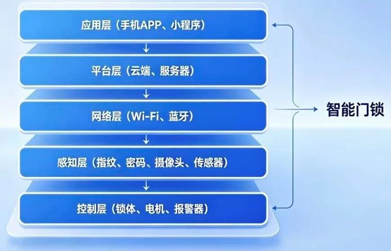
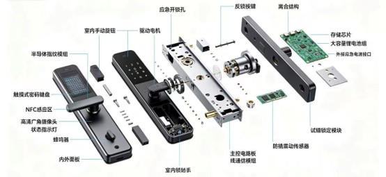
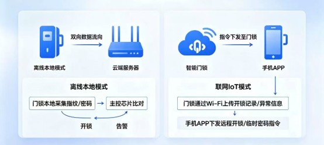
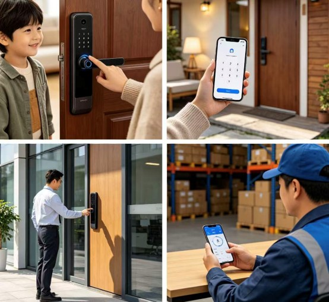

I. Concept and Core Process of IoT
1) Concept of Internet of Things (IoT)
The full name of IoT is Internet of Things. Based on the Internet and telecommunication networks, it connects all independent physical devices together. Combining sensor technology, wireless communication, cloud computing and embedded development, traditional devices are endowed with capabilities including information perception, data collection, network transmission, intelligent analysis, remote interaction and automatic control.
IoT realizes interconnection between people and devices, as well as device to device. Its general working process is: Data Collection → Network Transmission → Cloud Processing → Terminal Application → Equipment Execution. The smart lock is one of the most mature and widely used civilian IoT products.
2) Core Process
The IoT system consists of five layers, and the smart lock operates strictly following this framework:
- Perception Layer: It acts as the sensory part of the system. Equipped with fingerprint modules, touch keypads, NFC sensors, infrared human sensors, anti-pry vibration sensors and cameras, it collects original data such as fingerprints, passwords, vibration signals and remaining power. It is the foundation of all functions.
- Network Layer: It serves as the data transmission channel. The built-in communication modules use Wi-Fi 2.4G, BLE Bluetooth and NB-IoT to upload encrypted data to cloud servers, and receive control commands from the cloud to complete two-way data interaction.
- Platform Layer (Cloud): It is the brain and data warehouse of the whole system. Composed of professional cloud platforms, servers and databases, it manages massive connected devices, stores and analyzes data, forwards commands, and maintains user accounts and access rights.
- Application Layer: It is the operation entrance for end users, including mobile Apps, WeChat mini-programs and background management systems. Users can bind devices, set parameters, check access records and receive alarm notifications here.
- Control Layer: It is the final execution part. After receiving commands, the main control chip drives the motor and lock bolt to finish locking and unlocking. It also triggers sound-light alarms and camera capture for linkage security functions.

Figure 1: IoT Smart Lock Five-Layer System Architecture
II. Product: IoT Smart Fingerprint & Password Lock
1) Basic Product Information
- Official Name: IoT Smart Fingerprint & Password Lock for Home Security
- Aliases: Smart Lock, IoT Electronic Lock, Anti-theft Smart Lock
- Product Positioning: A new generation security device replacing traditional mechanical locks. It integrates biometric identification, IoT communication, cloud management and security warning, focusing on convenient access, remote control and home safety protection.
- Product Classification:
- By appearance: Handle-style lock, Push-pull lock, Fully automatic lock
- By function: Basic fingerprint & password lock, NFC-enabled lock, Video lock, Face recognition flagship lock
- By usage: Home door lock, Indoor door lock, Commercial access control lock
- Price Range:
- Entry-level: 500–1000 RMB, supports fingerprint, password and Bluetooth unlocking
- Mainstream home model: 1000–3000 RMB, with Wi-Fi, temporary passcode and alarm functions
- High-end flagship: Over 3000 RMB, equipped with face recognition, video intercom and smart home linkage
- Main Brands: Kaadas, Xiaomi, Lockin, Dessmann, TCL
- Compatibility: Fits most standard anti-theft doors, wooden doors, apartment doors and office doors.
2) Detailed Hardware Composition
The whole lock is divided into six major parts: outdoor panel, indoor panel, lock body, main control & communication modules, power supply modules and security sensors.
- Outdoor Interactive Panel:
- Semiconductor fingerprint module: With live detection, anti-fake fingerprint function
- Backlit touch keypad: Supports virtual password to prevent peeping
- NFC sensing area: Works with mobile phones, access cards and smart bands
- Wide-angle camera (optional): With night vision for capture and video intercom
- Indicator lights & buzzers: Status prompt and alarm reminder
- Indoor Panel:
- Manual rotary knob: Emergency mechanical unlock when power off
- Internal anti-lock button: One-click safety locking
- Hidden mechanical keyhole: Ultimate emergency solution
- Mechanical Lock Body:
- DC deceleration motor: Low noise and high torque to drive lock bolts
- Multi-point lock bolts & anti-pry hooks: Meet national anti-theft standards
- Electromechanical separation structure: Mechanical part works independently when circuit fails
- Main Control & Communication Modules:
- MCU main control chip: Processes data and executes logic
- Wi-Fi module: Connects to router for long-distance remote control
- BLE Bluetooth module: Short-distance fast pairing and unlocking
- Zigbee/NB-IoT module (optional): Alternative networking methods
- Power Supply Module:
- Lithium battery pack: Rechargeable, large capacity
- Dry battery compartment: Emergency backup power supply
- Type-C emergency charging port: External power bank support
- Security Sensor Module:
- Anti-pry vibration sensor: Detects violent prying and damage
- Wrong attempt lock module: Locks the panel after multiple failed verifications
- High temperature sensor (high-end model): Links with fire alarm system

Figure 2: IoT Smart Lock Hardware Component Breakdown
3) Working Principle & Implementation
The product supports offline local mode and online IoT mode. Basic functions work normally even without network.
- Offline Local Mode: Fingerprint/password verification → MCU compares locally stored feature values → Drives motor to unlock if match. All operations completed locally, no network required.
- Online IoT Mode: User sends command via App → Command transmitted through cloud platform → Lock receives via Wi-Fi/BLE → Executes corresponding actions (unlocking, status query, parameter setting).

Figure 3: Comparison of Offline Local Mode and Online IoT Mode
4) Problems Solved
Drawbacks of Traditional Mechanical Locks:
- Easily lost keys require replacement of entire lock cylinder
- Cannot monitor who entered and when
- Keys may be copied secretly, posing security risks
- Inconvenient for elderly and children to carry keys
- Cannot remotely grant temporary access to visitors
IoT Smart Lock Solutions:
- Key-free design: Use fingerprints, passwords, NFC cards or faces to unlock, completely eliminating the trouble of losing keys
- Access record traceability: Automatically record every entry and exit time and method, viewable in real-time on mobile phone
- Remote authorization: Generate temporary passwords remotely for couriers, housekeepers or guests, automatically invalid after expiration
- Abnormal alarm: Immediately send push notifications to mobile phone in case of forced prying, wrong attempts or low battery
- Smart home linkage: Unlock the door and automatically turn on lights, air conditioning and other devices
5) Application Scenarios
- Family homes: Elderly and children do not need to carry keys; parents can check children's return home status remotely
- Rental apartments: Landlords manage multiple properties remotely, change passwords online without changing locks
- Hotels & homestays: Guests self-check-in with temporary passwords, reducing front desk workload
- Office buildings: Employee fingerprint access control, attendance records automatically generated
- Shops & warehouses: Monitor lock status remotely and receive alarms in case of illegal intrusion
- Senior residences: Simple operation and key-free design suit elderly users better

Figure 4: IoT Smart Lock Application Scenarios in Different Environments